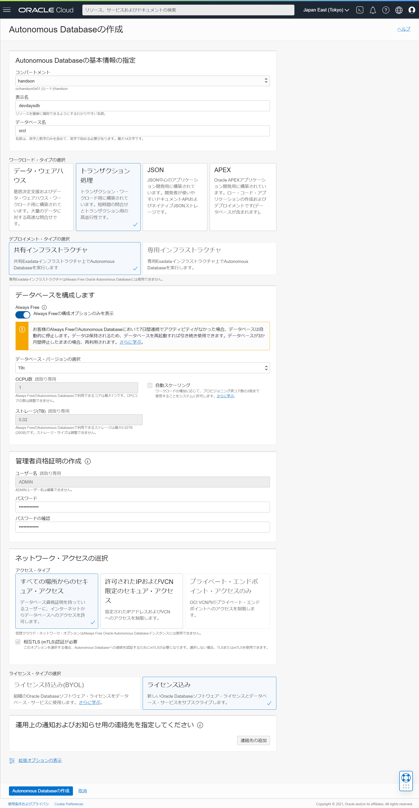
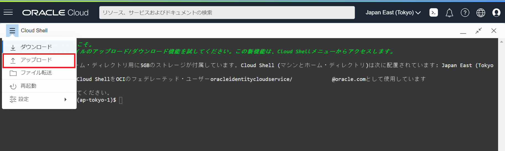
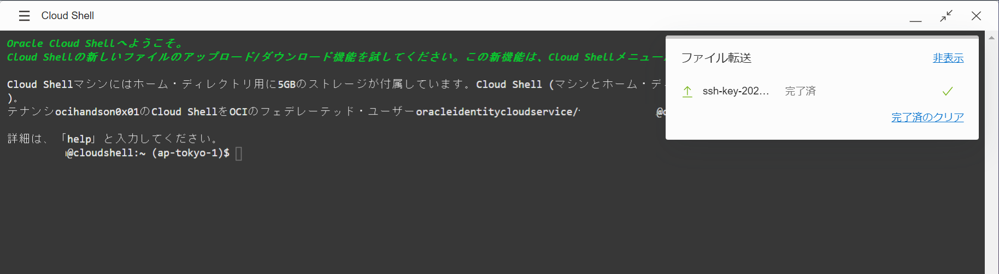
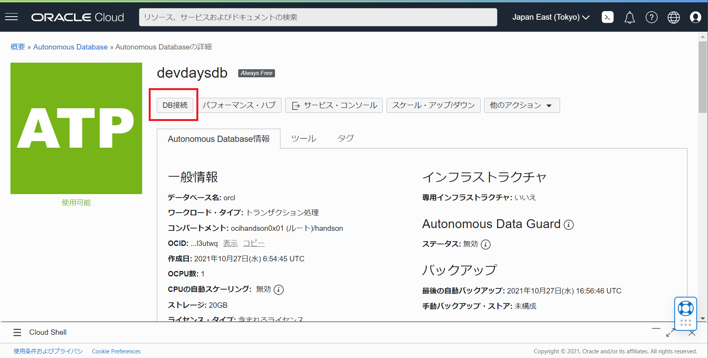
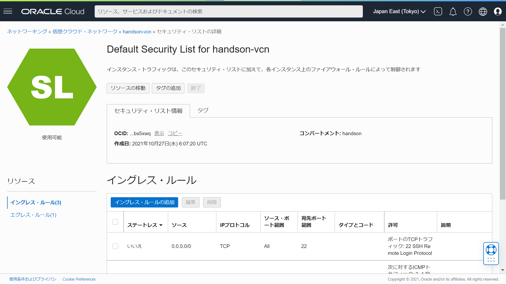
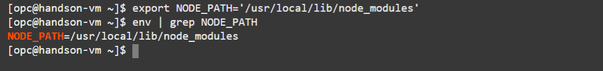

チュートリアル一覧に戻る : Oracle Cloud Infrastructure チュートリアル
Oracle Cloud Infrastructure (OCI) の ”Always Free” では、以下のようなリソースが永久無償で利用することが可能です。（無償利用が可能な全てのリソースについては Oracle Cloud Infrastructure ドキュメント：Always Free リソース を参照してください）
【無償利用可能なサービス例】
- AMDベースのコンピュート
- ArmベースのAmpere A1 Compute
- Block Volume
- Object Storage
- Flexible Load Balancer
- Autonomous Transaction Processing など
本チュートリアルでは、このAlways Freeで使えるリソースを活用し、データベース・アプリケーションの開発環境を構築していきます。構成は下記の通りです。

上記構成のうち、１～３までは実施済みである前提とします。下記の前提条件を参考に作成してください。
前提条件 :
- チュートリアル : 準備 - Oracle Cloud の無料トライアルを申し込むPermalink を参考に、Oracle Cloud Free Tier 環境を取得済みであること。
- チュートリアル：OCIコンソールにアクセスして基本を理解する - Oracle Cloud Infrastructureを使ってみよう(その1) を実施し、基本的な操作を理解していること
- チュートリアル：クラウドに仮想ネットワーク(VCN)を作る - Oracle Cloud Infrastructureを使ってみよう(その2) を実施し、VCNを作成済みであること
- チュートリアル：インスタンスを作成する - Oracle Cloud Infrastructureを使ってみよう(その3) の「2. 作成したインスタンス詳細情報の確認」までが実施済みであること
※ただし、イメージは プラットフォーム・イメージの「Oracle Linux Cloud Developer」を、シェイプは「VM.Standard.E2.1.Micro」を選択し、作成すること
所要時間 : 約40分
注意 : チュートリアル内の画面ショットについては Oracle Cloud Infrastructure の現在のコンソール画面と異なっている場合があります。
1. Autonomous Transaction Processing (ATP) の作成
前提条件の通り、VCNの作成、仮想マシンの作成等が完了したら、次に Autonomous Transaction Processing (ATP) を作成します。
-
ナビゲーション・メニュー（ 三 のアイコン）より、Oracle Database → Autonomous Transaction Processing をクリックし、Autonomous Databaseの一覧画面を表示します。
-
「Autonomous Databaseの作成」ボタンをクリックします。

-
下記を参考に、Autonomous Databaseの作成画面にて必要事項を入力し、左下の「Autonomous Databaseの作成」ボタンをクリックします。
Autonomous Databaseの基本情報の指定
- コンパートメント - 任意
- 表示名 - devdaysdb
- データベース名 - orcl
ワークロード・タイプの選択 - [トランザクション処理] を選択
デプロイメント・タイプの選択 - [共有インフラストラクチャ] を選択
データベースを構成します
- Always Freeの構成オプションのみを表示 - チェックを有効化
- データベース・バージョンの選択 - [19c] を選択 (初期値のまま)
- OCPU数 - 1 (変更不可)
- ストレージ(TB) - 0.02 (変更不可)
- 自動スケーリング - チェックなし (変更不可)
管理者資格証明の作成
- ユーザー名 - ADMIN (変更不可)
- パスワード - 任意 (パスワードは12文字から30文字とし、大文字、小文字および数字をそれぞれ1つ以上含める必要があります。パスワードに二重引用符(“)文字またはユーザー名”admin”を含めることはできません。)
例：Welcome123### - パスワードの確認 - 設定したいパスワードを再入力
ネットワーク・アクセスの選択
- アクセス・タイプ - [すべての場所からのセキュア・アクセス] を選択
- 相互TLS (mTLS)認証が必要 - チェックあり (変更不可)
ライセンス・タイプの選択 - [ライセンス込み] を選択
運用上の通知およびお知らせ用の連絡先を指定してください - 任意 (通知を受け取りたい場合のみ設定)
プロビジョニングは 作成ボタンを実行後、数分で完了します。
2. 仮想マシンにアクセスする
次に、前提条件に沿って作成された仮想マシンへ、Cloud Shell を用いてアクセスします。
-
まず始めに、Cloud Shell を起動するため、コンソール画面 右上にある ターミナルのアイコンをクリックします。

-
Cloud Shell の初回起動には時間がかかりますが、しばらく待つと、起動が完了し、コンソール画面の下部にターミナルが表示されます。

-
仮想マシンにアクセス時に使用する秘密鍵を Cloud Shell にアップロードしていきます。Cloud Shell の左上にある「三」のメニューをクリックし、「アップロード」をクリックします。

-
表示されたダイアログに、仮想マシン作成時に設定 (またはダウンロード) しておいた秘密鍵ファイルをドロップするか、「コンピュータから選択」をクリックし、エクスプローラからファイルを選択します。
続いて、「アップロード」ボタンをクリックします。

-
アップロードが開始され、Cloud Shell の右上にダイアログで転送状況が表示されます。「完了済」と表示されたことを確認してください。確認後、ダイアログを閉じるには、「非表示」をクリックしてください。

-
次に Cloud Shell 上で秘密鍵に対する設定を行っていきます。下記のコマンドを実行してください。
-
秘密鍵用のディレクトリの作成
mkdir ~/.ssh -
秘密鍵ファイルの移動
(例) 「mv ssh-key-2021-12-01.key ./.ssh/」などmv 秘密鍵ファイル名 ~/.ssh/ -
ファイルの権限の変更
(例) 「chmod 400 ./.ssh/ssh-key-2021-12-01.key」などchmod 400 ./.ssh/秘密鍵ファイル名
これで、秘密鍵に対する設定は完了です。
-
-
秘密鍵を用いて、仮想マシンにアクセスします。Cloud Shell 画面にて、下記のコマンドを実行してください。
コンピュート・インスタンスのパブリックIPアドレスが分からない場合は、ナビゲーション・メニュー（ 三 のアイコン）より、コンピュート → インスタンス をクリックし、インスタンスの一覧画面から、対象のパブリックIPアドレスを確認してください。
ssh opc@コンピュート・インスタンスのパブリックIPアドレス -i ./.ssh/秘密鍵ファイル名 -
接続確認のメッセージ「Are you sure you want to continue connecting (yes/no)?」が表示された場合、「yes」と入力します。

実行後、Cloud Shell 画面にて、[opc@ホスト名 ~]$ のように表示されていれば、仮想マシンへのアクセスは完了です。
3. 仮想マシンから ATP データベースにアクセスする
データベースに接続するにはクライアント資格証明が必要になります。コンソール画面からクライアント資格証明をダウンロードし、仮想マシンから作成したATPデータベースにアクセスしていきましょう。
-
コンソール画面のナビゲーション・メニュー（ 三 のアイコン）より、Oracle Database → Autonomous Transaction Processing をクリックし、Autonomous Databaseの一覧画面を表示します。 一覧から、本チュートリアルで作成したATPインスタンスを選択してください。
尚、Cloud Shell は、右上の「＿」アイコンをクリックすることで、最小化することが可能です。

-
ATPの詳細画面から、「DB接続」をクリックします。クライアント資格証明 (ウォレット) をダウンロードします。

-
「ウォレットのダウンロード」ボタンをクリックします。

-
ウォレットのパスワードを設定し、「ダウンロード」ボタンをクリックします。（パスワードは8文字から60文字とし、英字と数字をそれぞれ1つ以上含める必要があります。）

ウォレットファイルが「Wallet_orcl.zip」という名称でダウンロードされていることを確認してください。
-
Cloud Shell 画面に戻ります。「2. 仮想マシンにアクセスする」で実施した際と同様に、Cloud Shell の左上にある「三」のメニュー →「アップロード」から、先ほどダウンロードしたウォレットファイルをアップロードします。
-
次に Cloud Shell 上にアップロードしたウォレットファイルを 仮想マシンにアップロードします。仮想マシンと接続中の場合は、下記コマンドを実行し、アクセスを停止します。
exit -
「logout」と表示され、左側の文字列が「xxxx@cloudshell:~」と表示されていることを確認します。

-
下記コマンドを実行し、Cloud Shell にアップロードしたウォレットファイル (Wallet_orcl.zip) を、仮想マシンに送ります。
scp -i ./.ssh/秘密鍵ファイル名 Wallet_orcl.zip opc@コンピュート・インスタンスのパブリックIPアドレス:~/
-
再度、仮想マシンと接続します。
ssh opc@コンピュート・インスタンスのパブリックIPアドレス -i ./.ssh/秘密鍵ファイル名 -
下記コマンドを実行し、ウォレットファイルの展開します。
-
ウォレット用のディレクトリの作成
mkdir ~/Wallet -
ウォレットファイル (Wallet_orcl.zip) の移動
mv Wallet_orcl.zip ~/Wallet/ -
ウォレットファイルの展開
unzip ./Wallet/Wallet_orcl.zip -d Wallet/
-
-
展開したウォレットファイルの一つ「sqlnet.ora」ファイルを開き、ディレクトリ名を編集します。
-
「sqlnet.ora」ファイルをエディタで開く
vi ./Wallet/sqlnet.ora -
ディレクトリ名の変更
-
vi エディタで INSERT モードにするため、「Insert」キーを押下します。（「Insert」キーが無い場合は、半角英数字の入力状態で「i」キーを押下します。）
-
カーソルを１行目に移動します。
-
「?/network/admin」という文字列を削除し、代わりに「/home/opc/Wallet」を入力します。
-
「Esc」キーを押下し、vi エディタの INSERT モードを終了します。
-
変更を保存するため、「:wq」を入力し、「Enter」キーを押下します。
※ vi エディタが終了します。

Note
vi エディタで、編集を保存せずに終了したい場合は、コマンドモード 状態で「:q!」を入力し、「Enter」キーを押下することで元の画面に戻ることができます。
コマンドモードに戻るには、「Esc」キーを入力してください。
-
-
-
つづいて、環境変数を設定します。
-
環境変数の設定
export TNS_ADMIN='/home/opc/Wallet' -
設定内容の確認
env | grep TNS_ADMIN -
「TNS_ADMIN=/home/opc/Wallet」と表示されることを確認

-
-
アクセスのための準備はこれで完了です。実際にATPデータベースへアクセスしてみます。 下記のコマンドを実行してください。
sqlplus admin@orcl_high「Enter password:」のようにパスワードの入力を求められます。ATPデータベースを作成した際のパスワードを入力してください。

上記イメージのように表示されていればアクセスは成功しています。
※ sqlplus を終了する場合は、「exit」と入力し、「Enter」キーを押下してください。
4. 仮想マシンにnode.jsのサンプルアプリケーションをデプロイする
ここまでの手順で、作成した仮想マシンとデータベースの疎通確認ができました。
本手順では、Oracleの公式GitHubアカウントで公開されている node-oracledb リポジトリにあるサンプルアプリケーション(Banana Farmer Demonstration) を、仮想マシンにデプロイし、アプリケーションを通じてデータベースアクセス等を体感していきます。
-
GitHub のリポジトリから サンプルアプリケーションを ローカルにクローンするため、下記コマンドを実行します。（sqlplus を起動中の場合は、「exit」と入力後、「Enter」キーを押下し、終了してください。）
クローンは数秒で完了します。
git clone https://github.com/oracle/node-oracledb.git -
次に、クローンしたサンプルアプリケーションに含まれる「dbconfig.js」ファイルを編集します。「dbconfig.js」ファイルでは、サンプルアプリケーションのDB接続情報が定義されています。ファイルを編集し、DB接続情報を変更していきましょう。
-
vi エディタで「dbconfig.js」ファイルを開く
vi ./node-oracledb/examples/dbconfig.js -
ファイルの下部までスクロールします。
-
ユーザー名の変更
-
vi エディタで INSERT モードにするため、「Insert」キーを押下します。（「Insert」キーが無い場合は、半角英数字の入力状態で「i」キーを押下します。）
-
ユーザー情報を変更します。
・変更前：「process.env.NODE_ORACLEDB_USER “admin”, 」 ・変更後：「process.env.NODE_ORACLEDB_USER “admin”, 」 -
次にパスワード情報を変更します。（”adminのパスワード” はATPデータベース作成時に指定したものです。）
・変更前：「process.env.NODE_ORACLEDB_PASSWORD, 」
・変更後：「process.env.NODE_ORACLEDB_PASSWORD “adminのパスワード”,」 -
接続文字列も変更します。
・変更前：「process.env.NODE_ORACLEDB_USER “localhost/orclpdb1”, 」 ・変更後：「process.env.NODE_ORACLEDB_USER “orcl_high”, 」 -
「Esc」キーを押下し、vi エディタの INSERT モードを終了します。
-
変更を保存するため、「:wq」を入力し、「Enter」キーを押下します。
※ vi エディタが終了します。
-

-
以上でアプリケーションのデプロイと、接続のための準備は完了です。
5. ファイアウォールを開放してインターネットからアクセスする
サンプルアプリケーションを起動する前に、インターネットからのアクセスを許可するために、ファイアウォールの設定を変更していきます。仮想クラウド・ネットワークのファイアウォール設定だけでなく、インスタンス側の設定も必要な点に注意してください。
-
コンソールのナビゲーション・メニュー（ 三 のアイコン）より、ネットワーキング → 仮想クラウド・ネットワーク をクリックし、VCNの一覧画面を表示します。
-
一覧画面より、仮想マシンを配置している VCN を選択し、詳細画面を表示します。
-
左下のリソース・メニューから「セキュリティ・リスト」をクリックし、「Default Security List for handson-vcn」をクリックします。

-
セキュリティ・リストの詳細画面から「イングレス・ルールの追加」ボタンをクリックします。

-
下記を参考にイングレス・ルールを設定し、「イングレス・ルールの追加」をクリックします。
- ステートレス - チェックなし
- ソース・タイプ - CIDR
- ソースCIDR - 0.0.0.0/0
- IPプロトコル - TCP
- ソース・ポート範囲 - 未設定
- 宛先ポート範囲 - 7000
- 証明 - 未設定

仮想クラウド・ネットワーク側のファイアウォール設定はこれで完了です。
-
つづいて、インスタンスのファイアウォール設定を変更していきます。Cloud Shell に戻り、下記のコマンドを実行します。
-
TCPの7000番ポートのオープン
sudo firewall-cmd --permanent --add-port=7000/tcp -
ファイアウォールのリロード
sudo firewall-cmd --reload
いずれのコマンドも実行後、問題がなければ「success」と表示されます。
これでインスタンス側のファイアウォール設定も完了です。
-
-
最後の下準備です。下記のコマンドを実行し、node.js のモジュールのパスを環境変数へ設定します。
-
node.js のモジュールパスの確認
npm root -g表示されたパスを控えておきます。（「/usr/local/lib/node_modules」）
-
パスの設定
export NODE_PATH='/usr/local/lib/node_modules' -
設定内容の確認
env | grep NODE_PATH -
「NODE_PATH=/usr/local/lib/node_modules」と表示されることを確認

環境変数の設定は以上です。
-
-
いよいよ サンプルアプリケーションを実行していきます。サンプルアプリケーションは「node-oracledb/examples/」ディレクトリに数種含まれています。
まず始めに、「example.js」を実行してみます。「example.js」は、データベースに対して、３つのデータをインサートするアプリケーションです。
Cloud Shell にて、下記コマンドを実行します。
node node-oracledb/examples/example.js下記のような結果が表示されていれば、アプリケーションの実行は成功です。

-
次に「webapp.js」を実行します。「webapp.js」は、簡単なWebアプリケーションです。「webapp.js」を実行し、実際にインターネットからアクセスしてみます。
Cloud Shell にて、下記コマンドを実行します。
node node-oracledb/examples/webapp.js下記のような結果が表示されていれば、Webアプリケーションが起動できています。

お手元のPCのブラウザから、この Webアプリケーションにアクセスしてみましょう。
-
ブラウザのアドレスバーに「http://コンピュート・インスタンスのパブリックIPアドレス:7000/3」を入力し、「Enter」キーを押下します。下記のような Web画面が表示されていれば、成功です。

以上で、本チュートリアルは本編は完了です。
余裕がある方は、次の章に進み、フロントにロードバランサを構成し、ロードバランサを通じて上記の「webapp.js」にアクセスしてみましょう。
6. [任意] フロントにロードバランサーを構成する
OCI の Always Free サービスには、フレキシブル・ロードバランサも含まれています。
- 下記の設定内容を参考に、チュートリアル：ロードバランサーでWebサーバーを負荷分散する の 手順「4. ロードバランサーの構成」を実施し、ロードバランサを作成します。
- 可視性タイプは 「パブリック」、パブリックIPアドレスの割当ては「エフェメラルIPアドレス」、最小帯域幅、最大帯域幅はいずれも「10 Mbps」に、仮想クラウド・ネットワークは、本チュートリアルで使用しているものを選択します。また、サブネットは、サンプルアプリケーションをデプロイした仮想マシンと同じものを選択します。
- バックエンド・サーバーの選択では、「バックエンドの追加」ボタンより、サンプルアプリケーションをデプロイした仮想マシンを選択します。
- ヘルス・チェック・ポリシーの指定では、ポートを「7000」番に、URLパス(URI) を「/3」で設定します。
- リスナーの構成では、リスナーで処理するトラフィックのタイプを「HTTP」に、モニターするポートを「7000」番で設定します。
-
ロードバランサのプロビジョニングが完了したら、ロードバランサのパブリックIPアドレスを控えておき、ブラウザのアドレスバーに「http://ロードバランサのパブリックIPアドレス:7000/3」を入力します。
下記のような Web画面が表示されていれば、ロードバランサを経由した Webアプリケーションへのアクセスは成功です。

いかがでしたでしょうか。OCI の Always Free サービスには、このほかにも沢山のサービスが含まれています。その他のチュートリアルなども参考に色々と試してみてください。